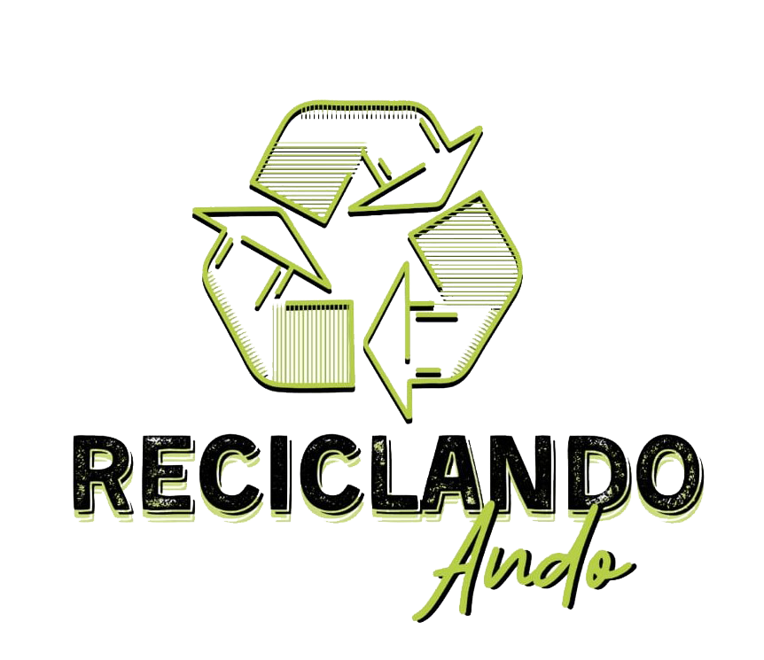

Somos Reciclando ando, un emprendimiento eco-friendly liderado por Milton. Hacemos vasos, jarras y objetos decorativos a partir de materiales reciclables, nuestro propósito es reducir la huella ecológica y generar conciencia sobre nuestros hábitos de consumo diario.
"Reciclar no es una obligación, es TU responsabilidad."
Nuestros productos
El paso a paso
Paso uno
Elegímos las botellas más adecuadas para el proyecto.
Paso dos
Las cortamos, emprolijamos y lijamos.
Paso tres
Las personalizamos y cuidadosamente empaquetamos para que los productos lleguen en las mejores condiciones.